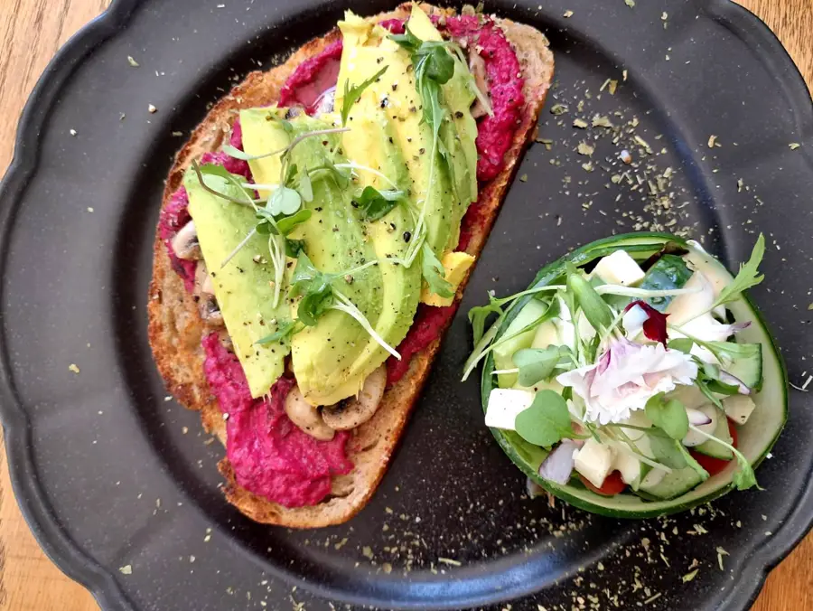
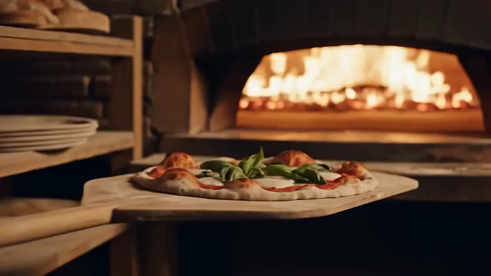
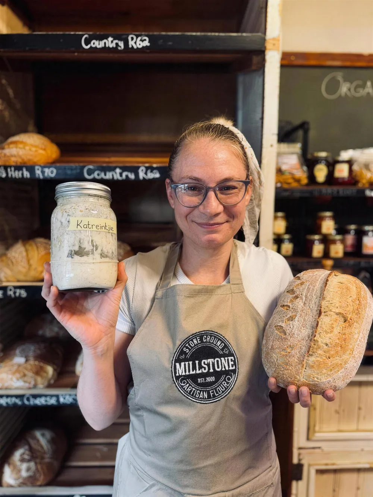
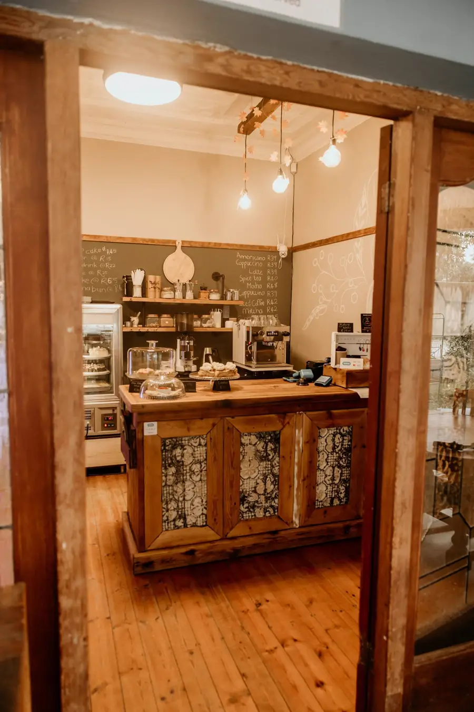
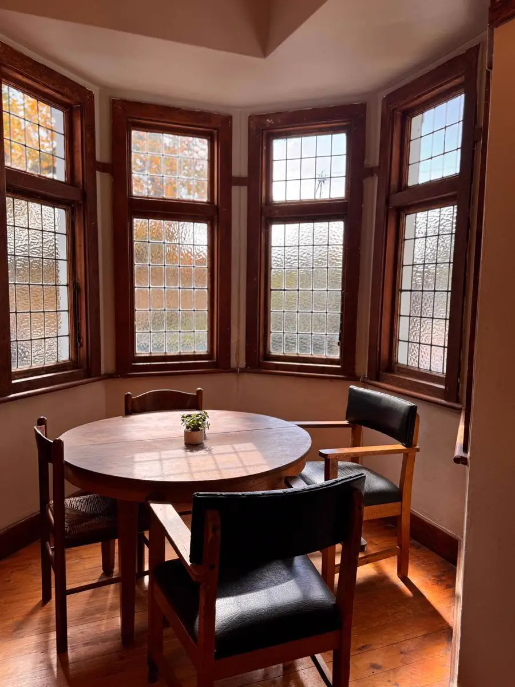
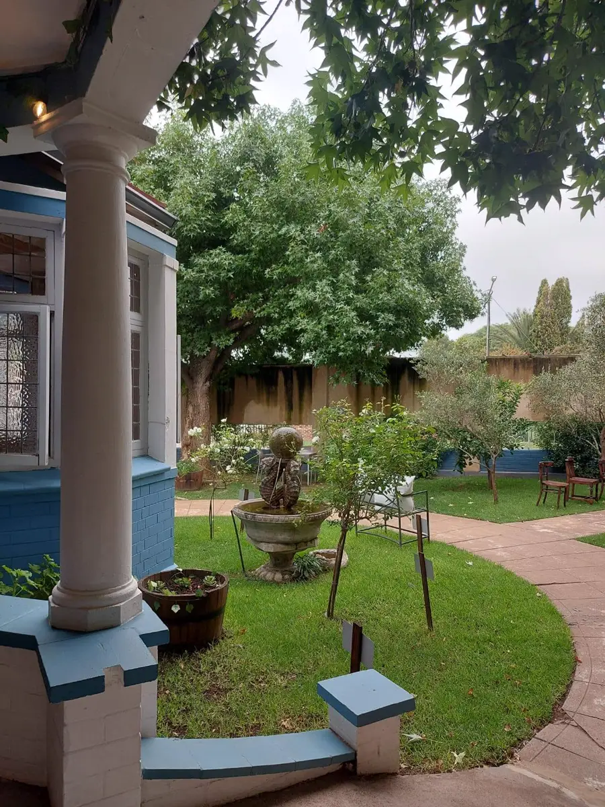
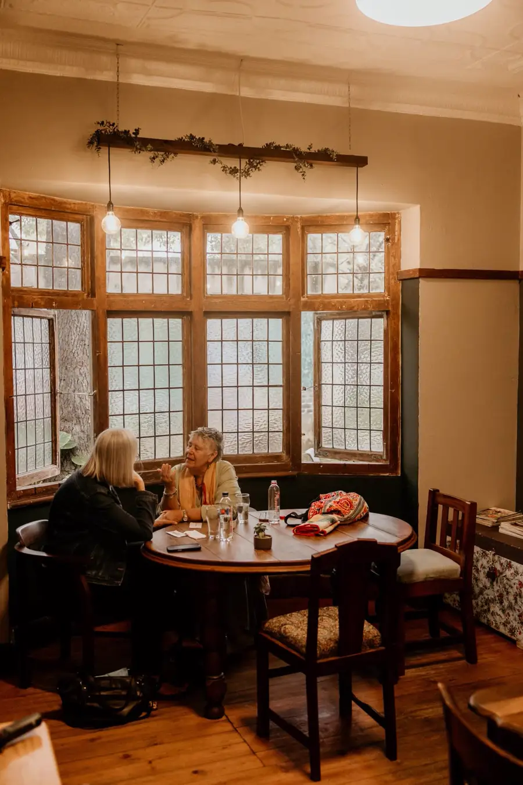
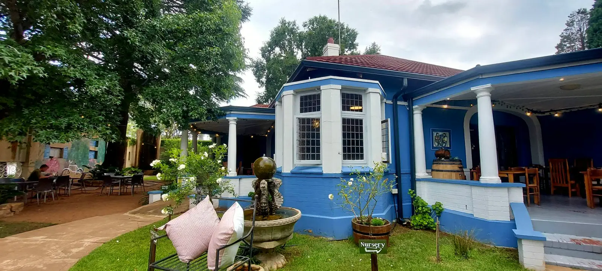
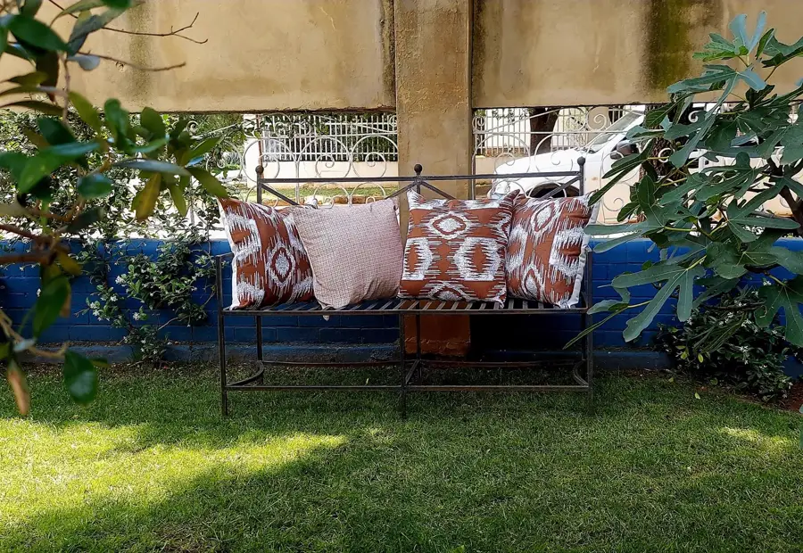
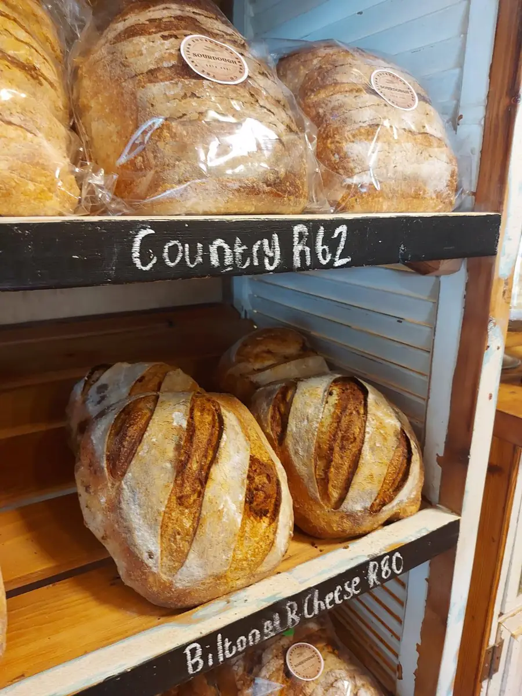

The Humming Avo R139
Buttered sourdough with creamy beetroot hummus, fried mushrooms and fresh avocado, with a side salad. Seasonal.

Naturally fermented loaves, wood-fired pizza and coffee in the garden of a blue Victorian house on Kruis Street.
Our brick oven burns hot enough to blister a hand-stretched sourdough base in minutes. Pull up a chair under the veranda lights, take it home, or have it delivered in Parys.

No commercial yeast and no shortcuts. Just a living starter and time, which gives you the crackling crust, the open crumb, the gentle tang, and bread that's easier to digest.
Tucked away just off the main road: bay windows, a long veranda, old trees and a garden made for long coffees.






Some Sundays bring mellow live music in the garden, 10:00–14:00, free entrance.
The oven stays lit late: sourdough pizza and wine under the veranda lights.
Eggs, preserves, granola and house pesto to take home with your loaf.
Find our sourdough at Die Grasdak tea garden & coffee shop.

From 9 reviews on Facebook.
“The atmosphere and food is amazing. We will definitely go again and recommend them to everyone!!”
“Regtig ’n oulike plekkie in Parys! Die suurdeegbrode is heerlik, die artisan-pizzas is fantasties…”
Just around the corner from the main road.